MyTechHelp is a peer-to-peer help app designed to make remote tech support feel simple, safe, and human. It helps someone requesting help connect with a trusted helper who can guide them through a support session.
Purpose
Give requesters a simple way to ask for help from someone they trust.
Let helpers connect by entering a 6-digit help code or responding to a trusted-helper request.
Allow screen sharing only after the requester starts it, so the requester stays in control.
Keep support approachable for families, friends, and non-technical users.
MyTechHelp is built around real people helping real people - without giving the helper control of the requester device.
2. Built Around Trust, Security, and User Friendliness
Requester control
The requester decides when a session begins, when screen sharing starts, and when the session ends.
View-only help
Helpers can view the screen only after screen sharing is started by the requester. Helpers do not control the requester device.
Secure request flow
Help codes expire automatically. Trusted-helper requests can be accepted, declined, cancelled, or allowed to time out.
Clear history
Previous Requests, Request Queue, Help History, and Diagnostics help users understand what happened during support.
Privacy note: Screenshots in public materials should blur names, phone numbers, email addresses, account IDs, and private device content before publishing.
3. Requester Flow
Use the requester flow when you need help. You can create a secure help code, ask a trusted helper, start screen sharing, and review previous requests afterward.
Start from the Request Help tab.
Use Get Help Now to create a secure code, or open Trusted Helpers to ask someone already saved.
Start screen sharing only when you are ready for your helper to view your screen.
Use Previous Requests to review completed, timed out, cancelled, or declined requests.
Request Help dashboard
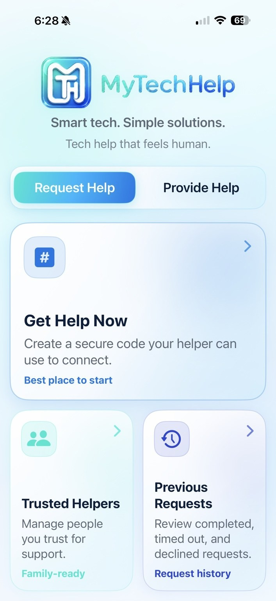
Start on the Request Help tab to create a code, manage trusted helpers, or review previous requests.
Get Help Now
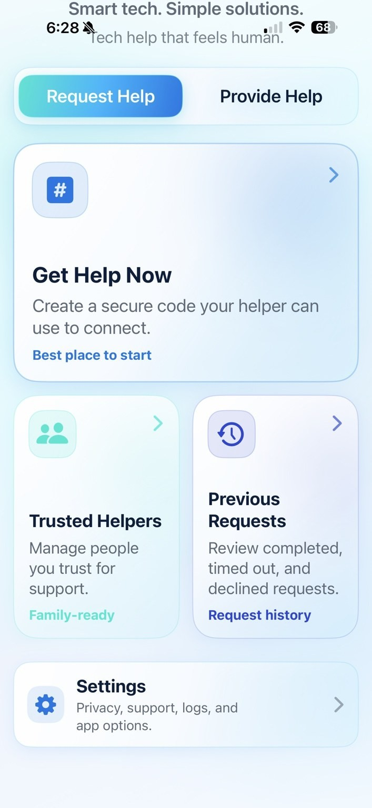
Use Get Help Now to create a 6-digit code. Codes expire automatically for security.
Help Code and Trusted Helpers
Secure help code
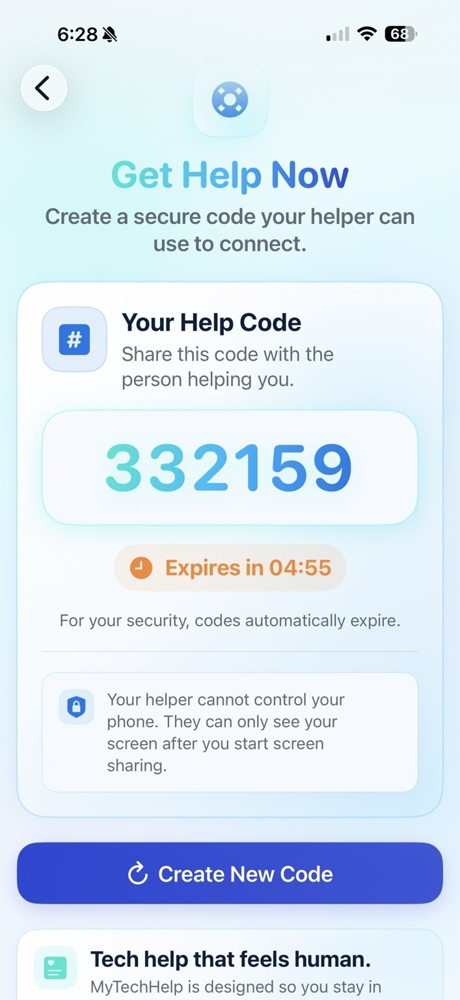
Share the secure code only with the person you expect to help you.
Trusted Helpers
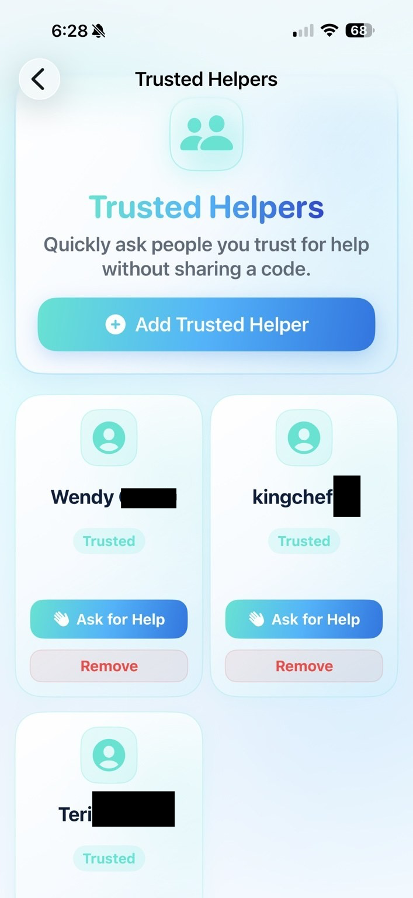
Tap Ask for Help under a trusted helper to send a support request without sharing a code.
Previous Requests
Request history
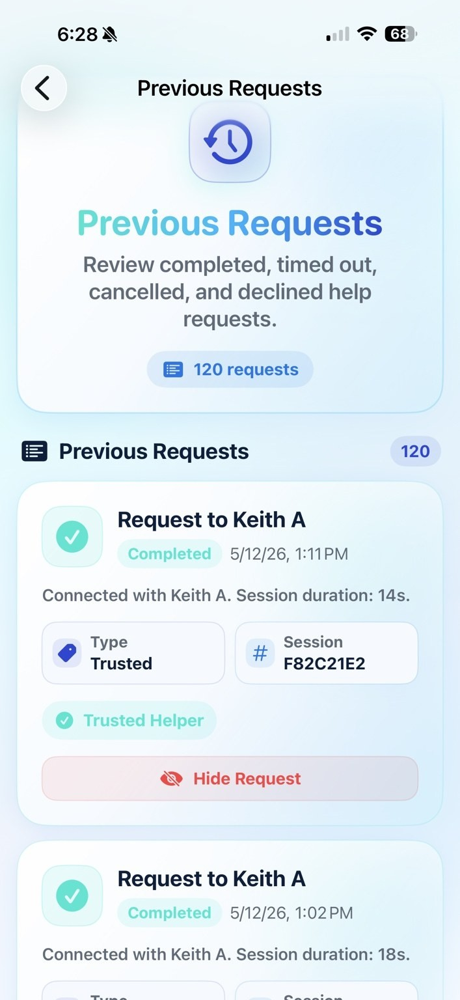
Previous Requests shows completed, timed out, cancelled, and declined help requests.
Requester safety reminder: Your helper cannot control your phone. They can only see your screen after you start screen sharing.
Screen Sharing and Ending Sessions
After the session connects, tap Start Screen Share.
When the Apple broadcast screen appears, choose the MyTechHelp broadcast extension.
Tap Start Broadcast.
After sharing begins, your helper can view your screen but cannot control it.
Return to MyTechHelp when you are ready to end the session.
Start Screen Share
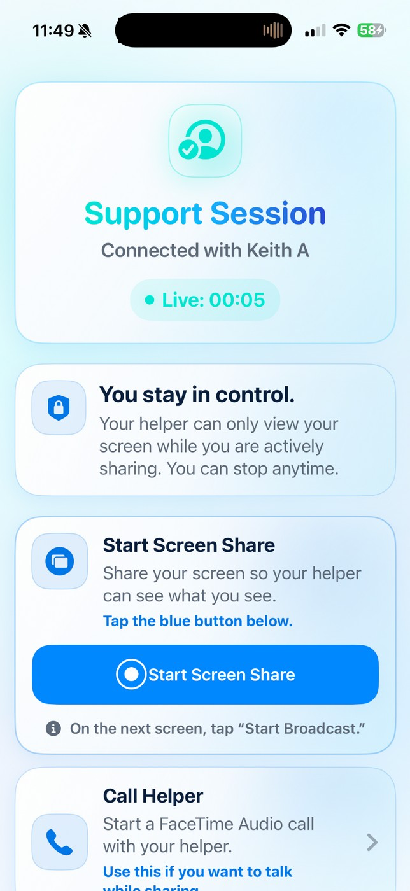
Screen sharing starts only when the requester chooses it.
Apple Screen Broadcast
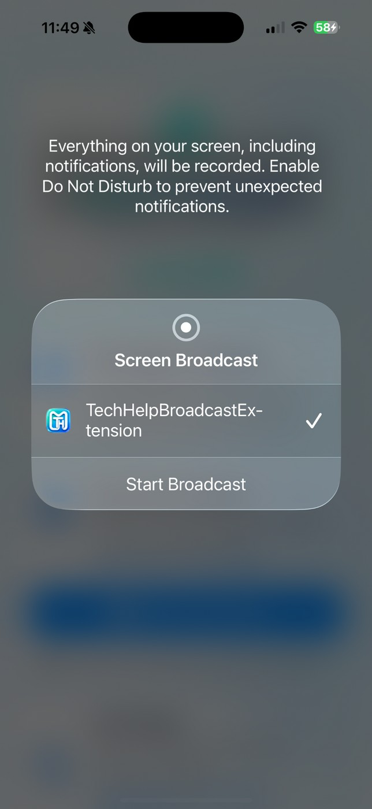
On the Apple broadcast sheet, choose the MyTechHelp broadcast extension and tap Start Broadcast.
Screen Sharing Active
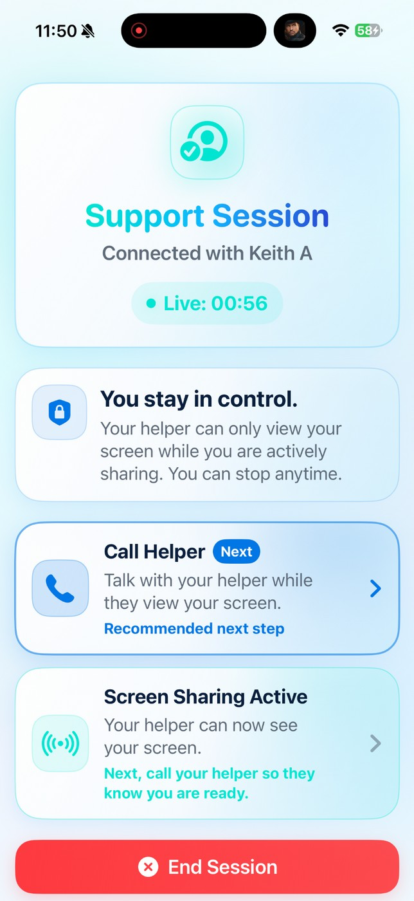
After broadcasting starts, the requester sees Screen Sharing Active and can call the helper if needed.
End Session Confirmation
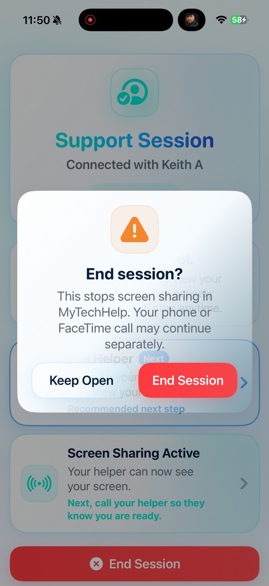
Tap End Session, then confirm. Phone or FaceTime calls may continue separately and should be ended separately.
Broadcast Stopped Confirmation
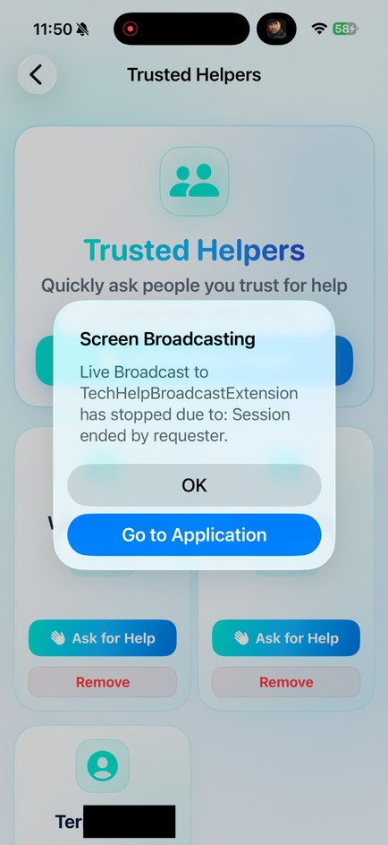
If either user ends the support session, MyTechHelp ends the session for both people and asks the broadcast extension to stop screen sharing.
Previous Request Statuses
Status
Meaning
Completed
A support session connected and ended normally.
Waiting
A request is still active and waiting for a response.
Timed Out
A trusted-helper request expired before it was accepted.
Cancelled
The requester withdrew the request before it connected.
Declined
The helper declined the request before a session started.
4. Helper Flow
Use the helper flow when someone asks you for help. Helpers can enter a help code, respond to trusted-helper requests, review the Request Queue, and review completed sessions.
Provide Help dashboard
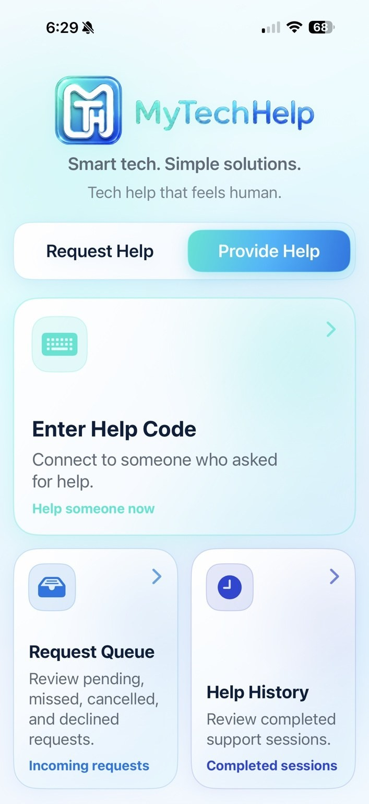
Helpers can enter a help code, review incoming requests, or open help history.
Enter Help Code
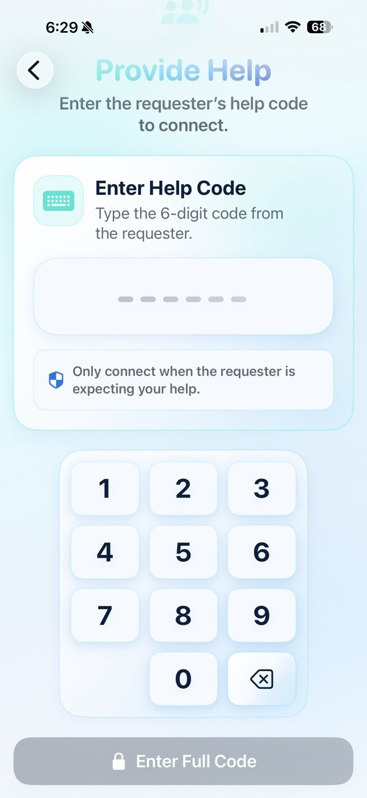
Enter the requester 6-digit help code only when the requester is expecting help.
Help History contains completed support sessions and basic session details.
During a Helper Session
After accepting, the helper session opens.
Wait for the requester to start screen sharing.
Use Refresh Screen if the view appears stale.
Use Call Requester if a support call contact is available.
Use End Session if the support session should be ended for both users.
Waiting for Requester Screen
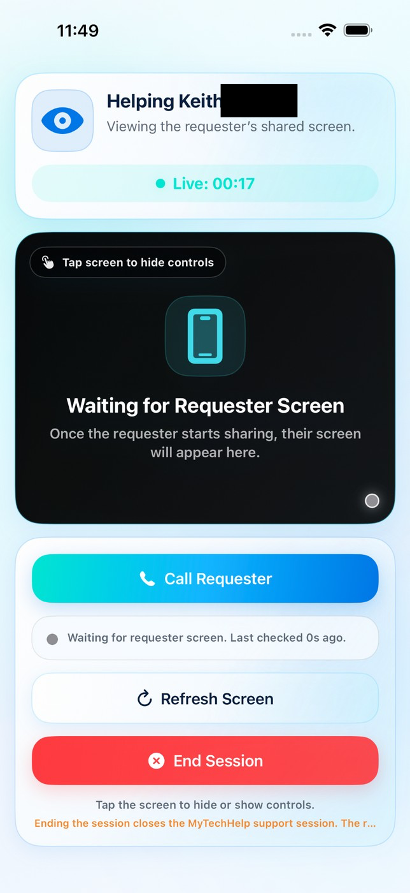
The helper sees a waiting state until the requester starts the Apple screen broadcast.
Shared Screen Visible
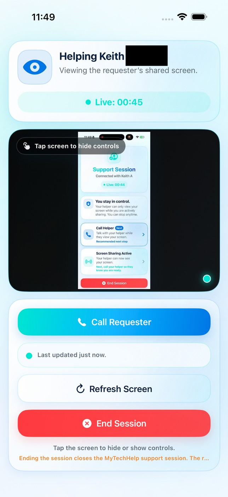
Once sharing starts, the helper can view the requester screen, refresh if needed, call the requester, or end the session.
Helper safety reminder: Only connect or respond when the requester is expecting your help. Protect privacy and follow MyTechHelp terms of use.
5. Settings, Features, and Pricing
Settings is where users manage account information, plan details, diagnostics, app preferences, support resources, guided walkthrough, and account deletion.
Pricing Model
Everyone receives a 30-day free trial.
After the 30-day free period, requester support sessions require Premium access.
Premium unlocks unlimited support sessions and future advanced features.
Helpers can still help someone else without a subscription unless they are requesting help themselves.
Pricing note: The Plan & Usage card shows whether the user is in trial, expired trial, or Premium status.
Settings overview and Plan & Usage
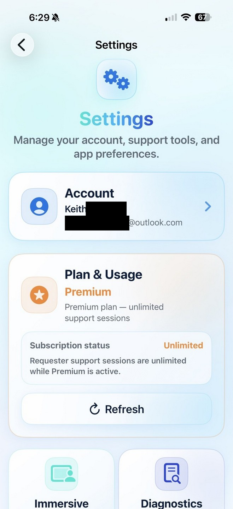
Settings includes Account, Plan & Usage, Diagnostics, App Info, Guided Walkthrough, and account tools.
Settings feature cards
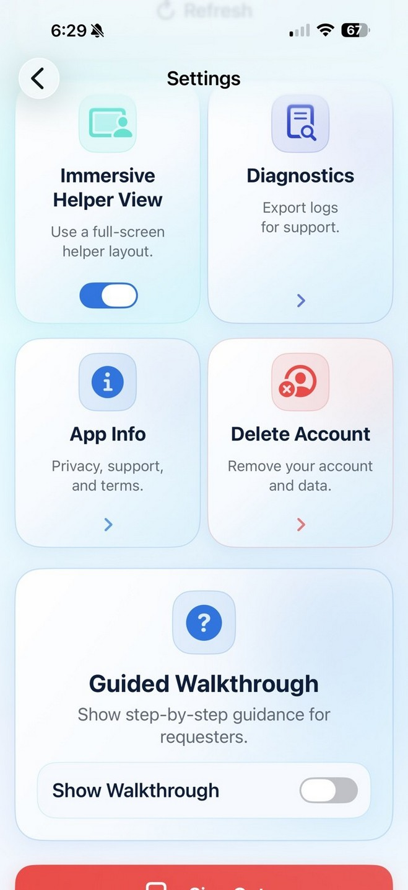
Use the Settings cards to adjust helper view, export diagnostics, review app info, or delete an account.
Account, Display Name, and Support Call Contact
The Account area controls the name shown during sessions and how trusted helpers may contact the requester during support.
Account and Display Name
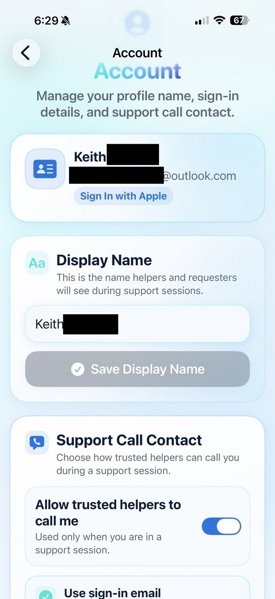
The display name is the name helpers and requesters see during support sessions.
Support Call Contact
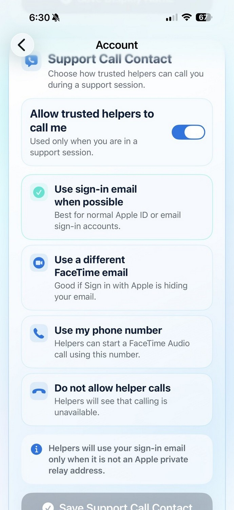
Support Call Contact controls whether trusted helpers can call during a support session.
Support Call Contact options
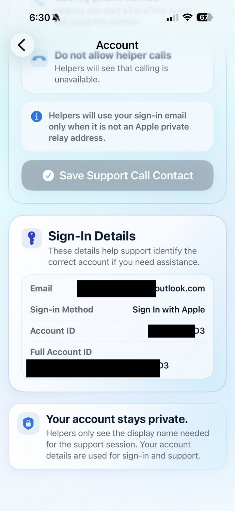
Choose sign-in email, a different FaceTime email, phone number, or no helper calls.
Support Call Contact: Users can allow trusted helpers to call by sign-in email, a different FaceTime email, a phone number, or they can turn helper calls off. Sign-in details stay private and are used for account support.
6. Diagnostics, App Info, and Account Deletion
Diagnostics
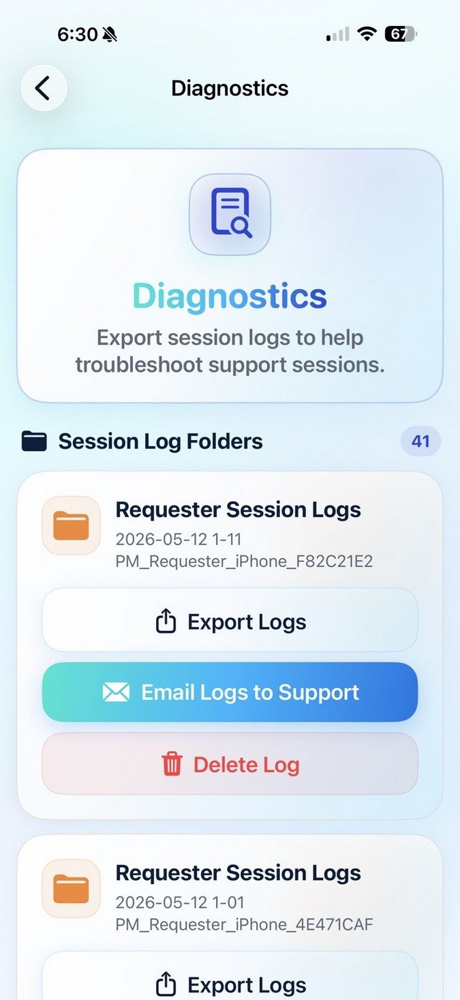
Diagnostics exports session logs, app startup/lifecycle logs, and support data for troubleshooting.
App Info & Support
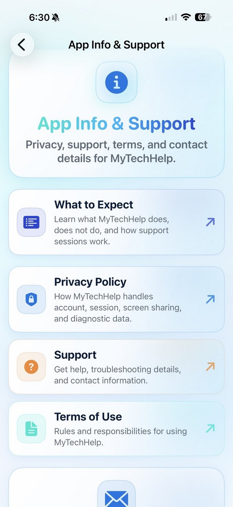
App Info & Support contains What to Expect, Privacy Policy, Support, and Terms of Use.
Diagnostics exports logs that help troubleshoot support sessions. The current export includes session logs and app startup/lifecycle logs so support can see what happened before and during a session.
Open Settings and tap Diagnostics.
Choose the relevant session log folder.
Tap Export Logs or Email Logs to Support.
Delete Account & Data
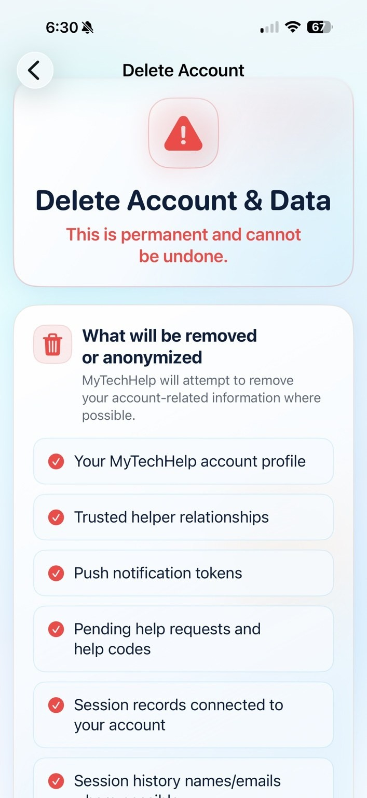
Account deletion is permanent. Review what will be removed or anonymized before confirming.
Account deletion is permanent and cannot be undone.
MyTechHelp attempts to remove account profile information, trusted-helper relationships, push tokens, pending requests, help codes, and session records connected to the account.
7. Quick Reference
Area
Feature
Purpose
Requester
Get Help Now
Create a secure 6-digit help code.
Requester
Trusted Helpers
Ask a saved helper for help without sharing a code.
Requester
Previous Requests
Review completed, timed out, cancelled, and declined requests.
Helper
Enter Help Code
Connect to a requester using their 6-digit code.
Helper
Request Queue
Review pending, missed, timed-out, cancelled, and declined requests.
Helper
Help History
Review completed support sessions.
Settings
Plan & Usage
Check 30-day free trial, expired trial, or Premium status.
Settings
Support Call Contact
Choose how trusted helpers may call during a support session.